Consulting
KZN has deep expertise and delivers proven results for consulting, audit and project management services:
Managing projects - KZN uses Agile and PRINCE2 to deliver projects within budget and timeframes.
Well-architected assessment - provides an independent, unbiased examination of your current information technology infrastructure with recommendations for remedation.
Cost optimisation - Manage your infrastructure and cloud costs.
Solutions architecture - architecture designs that meet your business objectives
Custom consulting - KZN can provide consulting tailored to your individual needs and require outcomes.
DevOps
What is DevOps?
DevOps is a set of software development practices that reduce the time between committing a change to a system and the change being placed into normal production, while ensuring high quality.
Rapid and predictable feature delivery - features are rapidly made available to end users.
Focus on customer value - Cross-functional teams are empowered to work on the highest value tasks.
Setup development, testing and production environments in minutes, not hours - templated, repeatable and automated infrastructure as code.
Focus on delivery rather than fixing problems - Highly available and fault tolerant architectures provide reliability and uptime.
Stay secure - Security is incorporated across the entire software development lifecycle with automated security checks to catch vulnerable code early.
Improved quality and confident release of changes - Automated testing, build and deployment of immutable infrastructure ensures quality.
Easily add features, whilst ensuring reliable releases - from codified quality and functional testing.
Quickly experiment and deliver value - Flexible and low cost deployment allows rapid iteration of ideas at low cost.
Keep the team engaged - Visible key performance indicators and ChatOps keeps everyone on the same page.
Product development
KZN can help take your business idea from high level concept to a finished, saleable product.
Our skills include:
- - Feasibility analysis
- - Product planning
- - Project management
- - Business analysis
- - Software development
- - Support and maintenance
Digital transformation
KZN helps organisations transform the way they manage information using the power of the cloud.
AWS can replace on-premises hardware with cloud based servers or serverless applications. The cloud can also provide improved resilience and disaster recovery capability.
We help our clients on their journey to reduce costs and move away from managing hardware to rapidly delivering innovation that adds business value.
Some technologies that we use include:
- - Serverless computing / AWS Lambda
- - NoSQL databases
- - Microservices
- - Infrastructure as Code (laC) / AWS CloudFormation
Data and analytics
Overview
KZN’s data practice provides reporting systems and analytics that unlock business insights from raw enterprise data.
Data engineering - we deliver resilient enterprise scale data lakes and analytics capabilities.
Data sources - automatically import data from real time feeds and SCADA systems, spreadsheets and finance systems.
Unstructured data - unlock business value by making scanned documents searchable (including handwritten documents).
Analysis and machine learning - extract meaning from large amounts of data using Juypter notebooks and Spark.
Reporting solutions - use a selection of solutions including PowerBI, Tableau and QuickSight.
Time series data - look ahead with forecasting. Identify error conditions with anomaly detection.
Case Studies
Energy management dashboard - major utility
The Energy Management dashboard provides real time visibility of energy costs, consumption and availability (including any hard limits). This incorporates real time feeds from a weather data provider and aggregates energy consumption from the clients electrical systems via a SCADA system.
This allows energy analysts to make informed real time decisions to manage energy costs.
KZN delivered a platform with built in resilience using failover to maintain high availability. It is serverless, thereby saving having to commission hardware or incur fixed costs.
Data Lake - Corporate client
The client wanted to provide analytical capabilities to analysts to support optimisation of operations for a large chamical plant. The data lake needed to ingest real time data feeds from the plant’s SCADA system.
KZN delivered a data lake that is robust and reliable. It leaverages serverless technologies so no on-site infrastructure is required. Also, analysts can have access to the latest machine learning tools via Sagemaker Jupyter notebooks.
Reinforcement learning using AWS DeepRacer
KZN has an internal team that is using reinforcement learning to train a simulated autonomous car to race around a track, using only data from its sensors. The goal is to beat other teams in time trials.
Our partners.
- 